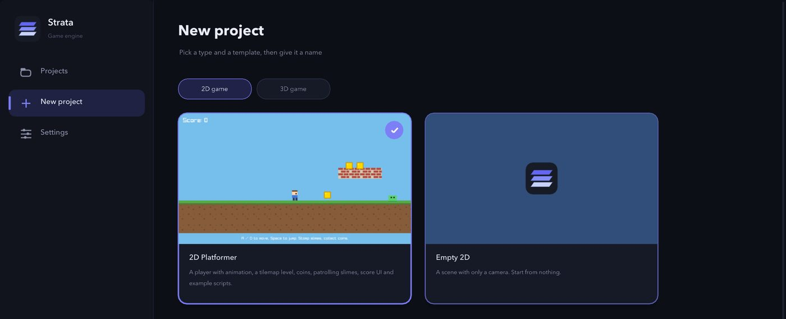
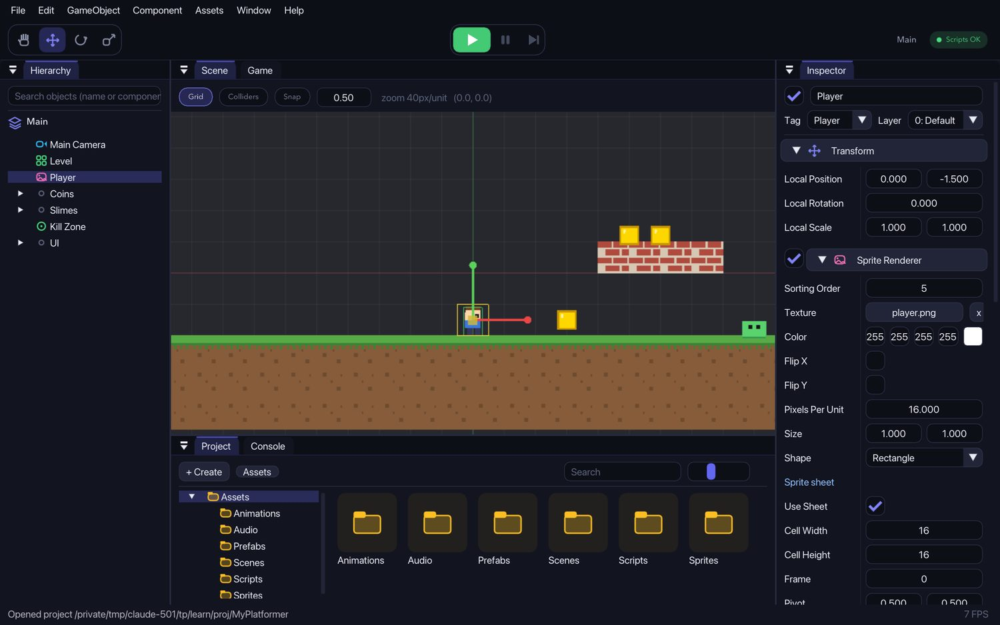
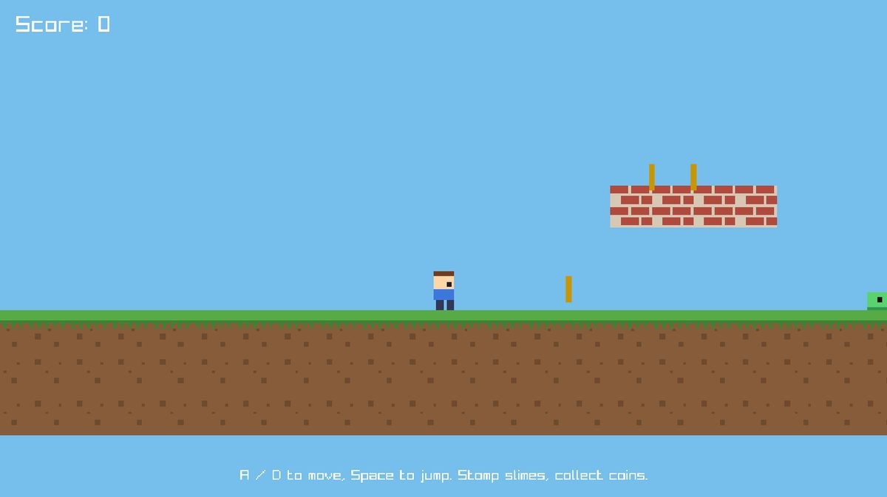

Your first 2D game
You will make a small platformer from a template, play it, and then change it: a faster player, more coins and one more enemy. You need Strata installed and nothing else.
1Make the project
Open Strata Hub. Click New project, choose 2D game and the 2D Platformer template, give the project a name and click Create project.

The editor opens in its own window (the app called Strata). The Hub stays open so you can start other projects.
2Look around the editor
The editor has four main parts:
- Hierarchy (left): every object in the scene. Objects can be inside other objects, like Coins and Slimes.
- Scene (middle): the level you are building. Click an object to select it.
- Inspector (right): the components of the selected object. Click Player to see its Sprite Renderer, Rigidbody 2D, Box Collider 2D and Player Controller.
- Project (bottom): the files of your game, like sprites, scripts and scenes.

3Press Play
Click the green Play button at the top. The Game tab opens. Move with A and D (or the arrow keys) and jump with Space. Jump on slimes and touch coins to collect them.

Click the red Stop button to go back to editing.
4Change how the player feels
Select Player in the Hierarchy. In the Player Controller component change Move Speed from 7 to 10 and Jump Speed from 14 to 18. Press Play again and notice the difference.
Every public field in a script shows up in the Inspector like this. You will make your own in the script guide.
5Add more coins
Open the Coins group in the Hierarchy and click one Coin. Press Cmd+D (Ctrl+D on other systems) to duplicate it. Press W for the Move tool and drag the arrows in the Scene view, or type new numbers into Local Position in the Inspector.
Scroll the Scene view with two fingers or the mouse wheel to zoom, and drag with the middle or right mouse button to pan.
6Add an enemy
Open Slimes, select a Slime, duplicate it with Cmd+D and move it somewhere new. The Patrol component makes it walk back and forth: Speed is how fast, and Range is how far from its start it goes.
7Save and share
Press Cmd+S to save the scene. When you want a game you can give to others, open Window › Build, choose an output folder and click Build. Use Run build to try it, or Show in Finder to find the files.